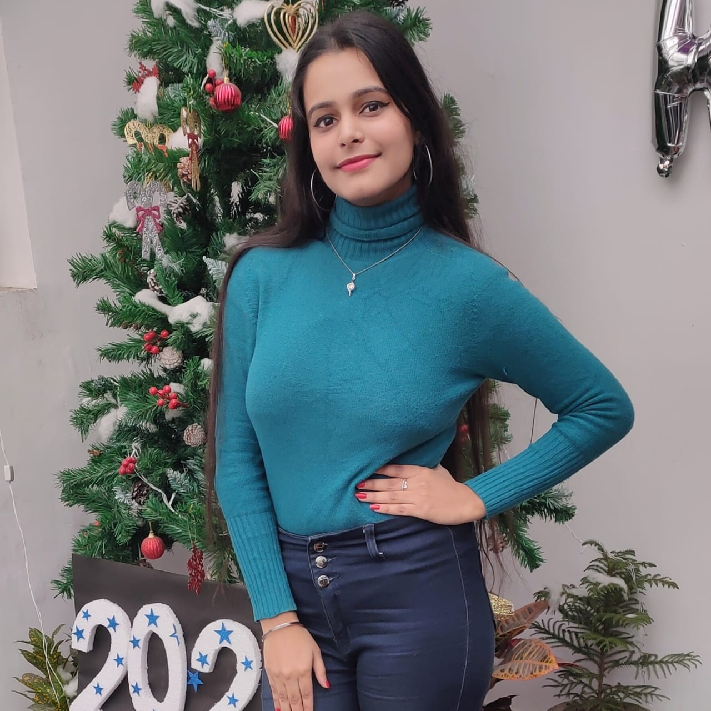

I'm Jasmine
Kaur
Hello, my name is Jasmine Kaur, and I'm a student. I'm a
graphic designer and front end developer from Delhi, India.
I enjoy taking complex problems and turning them into simple and
beautiful interface designs. I also love
the logic and structure of coding and
always strive to write elegant and efficient code, whether it be HTML, CSS
or jQuery.
I also love playing with vectors and making illustrations and
designing them beautifully.
When I'm not coding or playing with vectors, you'll find me drawing portraits or editing
videos. After coding and graphic
designing, I'm a big fan of drawing and editing too.